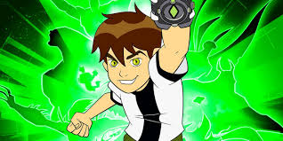

BEN 10: BEST TV SHOW

Ben 10 is an iconic animated series produced by Cartoon Network. The show premiered in 2005 and follows the adventures of a young boy named Ben Tennyson who discovers the Omnitrix, a mysterious alien device that attaches to his wrist. The Omnitrix allows Ben to transform into various alien heroes, each with unique abilities. Throughout the series, Ben battles evil villains and saves the world alongside his cousin Gwen and Grandpa Max.
The series stars Tara Strong as the voice of Ben Tennyson, Meagan Smith as Gwen Tennyson, and Paul Eiding as Grandpa Max. The popularity of Ben 10 led to several spin-offs, movies, and a massive fan following worldwide.